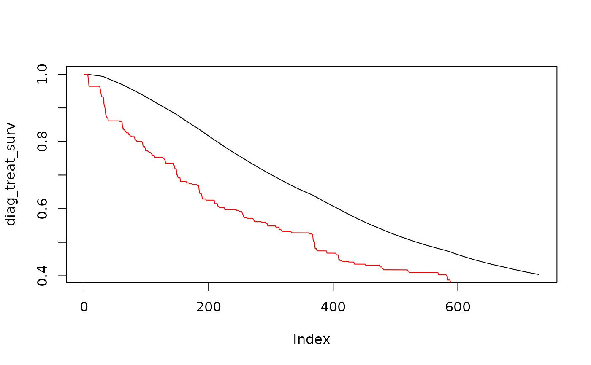

Obtain Probability Curve for Treatment
apply_time_to_treatment.RdObtain Probability Curve for Treatment
Arguments
- diag_surv
Time to diagnosis probability function vector. The probability an individual diagnosed i days ago is not diagnosed.
- treat_surv
Time to treatment. The probability an individual diagnosed i days ago is not on treatment.
Value
A vector where the ith element is the probability that an individual infected i days ago has either not been diagnosed or is not on treatment.
Details
If the RITA algorithm excludes individuals based on treatment rather than diagnosis, this function can be used to calculate the survival function for use in icidence estimation.
Examples
data("assay_data")
#Obtain the diagnosis survival function
diag_surv <- diagnosis_survival(
assay_data$undiagnosed,
assay_data$tslt,
assay_data$ever_hiv_test,
assay_data$hiv,
assay_data$weights,
n=365*2)
# Posit an average time to treatment of 150 days
treat_surv <- 1 - pexp(1:(365*2), 1/150)
# Calculate the treatment survival function
diag_treat_surv <- apply_time_to_treatment(diag_surv, treat_surv)
# Compare survival curve for time to diagnosis (red) vs time to treatment (black)
plot(diag_treat_surv, type="l")
points(diag_surv, type="l",col="red")

#Create a dummy variable for treatment
assay_data$treated <- !assay_data$undiagnosed
#Calculate incidence
rita_incidence(
recent=assay_data$recent,
undiagnosed=assay_data$treated, #used treated indicator in place of undiagnosed for screening
low_viral=assay_data$elite_cntr,
hiv=assay_data$hiv,
weights=assay_data$weights,
tslt=assay_data$tslt,
ever_hiv_test=assay_data$ever_hiv_test,
diag_surv = diag_treat_surv
)
#> incidence residual_frr omega_rs omega_s P(R|S) P(S|H) P(H)
#> 1 0.001377029 0.0008349639 0.335939 1.335463 0.01434871 0.1554416 0.2480427